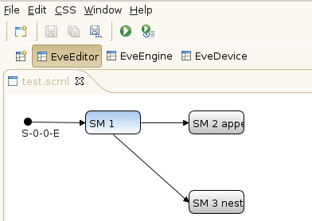
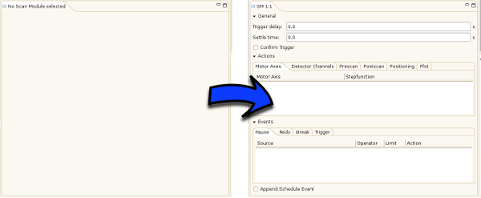
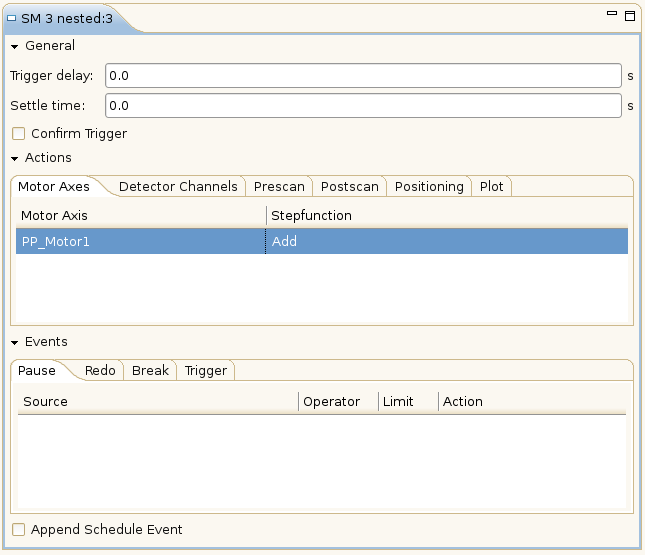

Add Devices to a Scan Module
To add a device (e.g. a motor axis) to a scan module follow these steps:
- Select the scan module where the device should be added to by (left-)clicking on it.

The previously empty scan module view now shows the scan module just selected.
 - Right click in the white area below the „Motor Axes” tab to open a context menu showing all devices (ordered by classes). Navigate to the axis you want to add and click on it. Note that depending on your current location (test site) and configuration (class names) different devices will be shown .
- The previously added motor axes is now shown in the table.

To add a detector channel simply change the active tab in step 2 before right clicking to open the context menu. How to set properties of devices is described here .